Wired Networked Embedded Systems
From wires between chips on one board to local networks: how bits survive long cables, how devices share one medium without talking over each other, and how the CAN bus and Ethernet put it all together.
The physical layer
From intra-board communication to local networks
The OSI reference model: seven layers of abstraction
Sending a parcel involves many people who never meet: you write the letter, someone packs it, a courier picks the route, a driver moves the truck. Each only talks to the step directly above and below.
Networks are organised the same way, in layers. In Week 5, UART, SPI and I2C connected chips on one board. This lecture climbs up to the bottom two layers of real networks: getting bits across a cable (physical) and turning them into frames that many devices can share (data link).
| # | Layer | Data unit | Function |
|---|---|---|---|
| 7 | Application | Data | Distributed application protocols |
| 6 | Presentation | Data | Translation of data (encryption/decryption, compression, etc.) |
| 5 | Session | Data | Managing communication sessions |
| 4 | Transport | Segment | Transmission of segments to processes |
| 3 | Network | Packet | Transmission of packets to nodes over multiple networks |
| 2 | Data Link | Frame | Transmission of frames between physically-connected nodes |
| 1 | Physical | Bit | Transmission and reception of bits over a physical medium |
- Each layer offers a service to the layer above and hides how it is done. Layer 2 does not care whether layer 1 uses Manchester coding or MLT-3; it just gets bits.
- Wired embedded networks such as CAN and Ethernet are defined at layers 1 and 2, which is what the rest of this lecture covers.
The Physical Layer (PHY)
Raw bits over a physical medium
The physical layer is the part that actually touches the cable. Everything messy (voltages, timing, noise, how a '1' looks on the wire) is handled here, often by a dedicated chip.
Upwards it offers a simple promise: bits go in on one end and come out on the other.
- The Physical Layer defines the means for transmitting raw bits over a physical medium.
- It is typically implemented in hardware: a PHY chip, such as the RTL8201 Ethernet PHY in the photo.
- It abstracts the physical aspects of communication: modulation, demodulation, bit synchronisation, line coding, multiplexing, filtering, and more.
- All these procedures are abstracted to: bits transmitted on one end and received on the other.
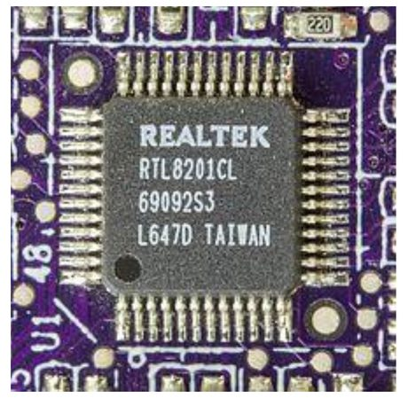
Line coding: NRZ and RZ
How a '0' and a '1' look on the wire
A line code is the agreement about what a bit physically looks like. The obvious choice ("high means 1") is only one option. You can also say "a change means 1", or "a short pulse means 1".
Why bother? Because some codes keep the line moving even when the data does not, which helps the receiver stay in step.
- NRZ (Non-Return-to-Zero): the signal does not return to zero in the middle of the bit.
- NRZ-L (level): '0' is zero voltage, '1' is positive voltage. This is what UART uses.
- NRZ-M (mark): '0' keeps the same voltage, '1' is a transition.
- NRZ-S (space): '1' keeps the same voltage, '0' is a transition.
- NRZ-I (inverted) refers to NRZ-M or NRZ-S: the bit is carried by a change, not by a level.
- RZ (Return-to-Zero): '0' is zero voltage, '1' is positive voltage that returns to zero in the middle of the bit.
- In the NRZ-I codes the transition happens at the start of the bit, so the receiver must remember the previous level.
- Long runs of identical bits leave NRZ-L flat; NRZ-M stays flat on runs of '0', NRZ-S on runs of '1'; RZ stays flat on runs of '0'.
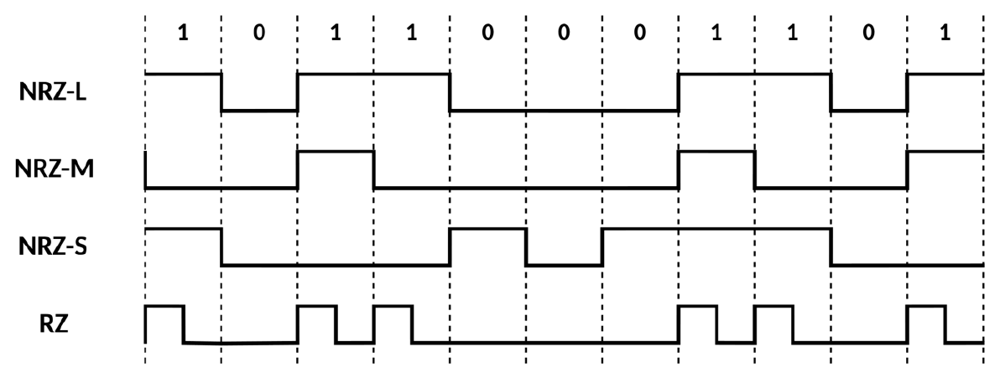
Manchester coding
A transition in the middle of every bit
Manchester never lets the line rest: every bit is a "flip" in the middle, either up or down, and the direction of the flip is the bit.
Because there is a flip in every bit, the receiver can lock onto the rhythm without a separate clock wire. The price: the line changes up to twice per bit, so it needs twice the bandwidth.
- Encodes the logical value as a transition in the middle of the bit.
- Original (G. E. Thomas): '0' is a low-to-high transition, '1' is a high-to-low transition.
- IEEE 802.3 (Ethernet): '0' is a high-to-low transition, '1' is a low-to-high transition. The two conventions are exact inverses.
- Self-clocking: digital inputs can detect the transitions without needing a clock line.
- Requires double the bandwidth: a run of identical bits needs an extra transition at every bit boundary, so the line may change twice per bit.
- With the clock drawn as in the slide (high in the first half of each bit), the 802.3 version equals data XOR clock, and the Thomas version is its inverse.
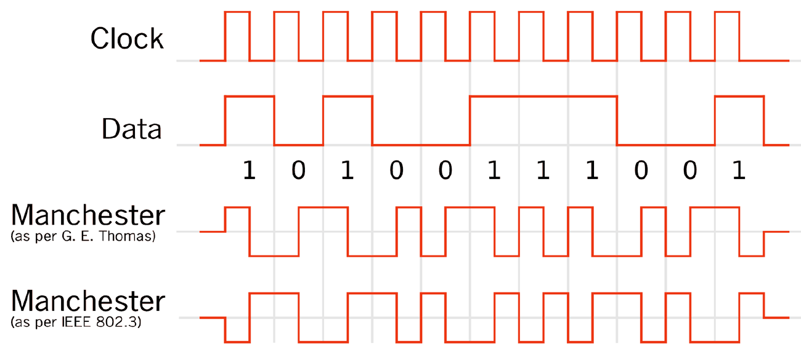
Transmission over long wires
Why a long cable produces bit errors
On a circuit board a wire is a few centimetres: it behaves almost perfectly. Stretch it to tens of metres and it starts acting like an antenna and a sponge. It picks up interference, it smears the sharp edges of the signal, and the two ends may not even agree on what "0 V" is.
The receiver still just compares against a threshold, so enough distortion turns into bit errors.
- Wires are imperfect conductors: they have a small resistance (milliohms per metre) and a small capacitance.
- These imperfections are negligible in short wires, but have side-effects when the wires are longer:
- Wires pick up electromagnetic interference (EMI).
- The ground level at the two sides is not the same.
- High frequencies get attenuated: the resistance and capacitance act like a low-pass filter that rounds the edges.
- Result: bit errors. In the slide, the noise picked up on the wire pushes several samples across the threshold.
- A faster bit rate makes it worse: shorter bits have less time to reach their level through a rounded edge.
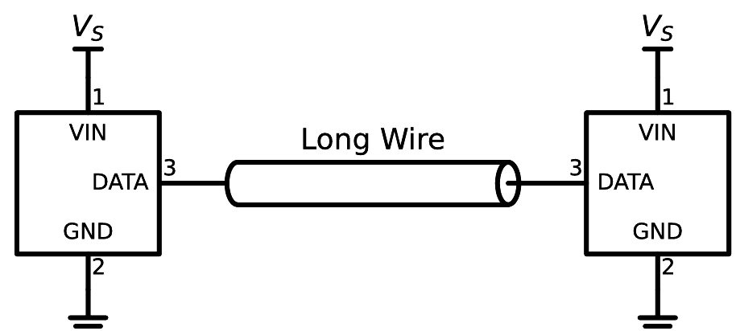
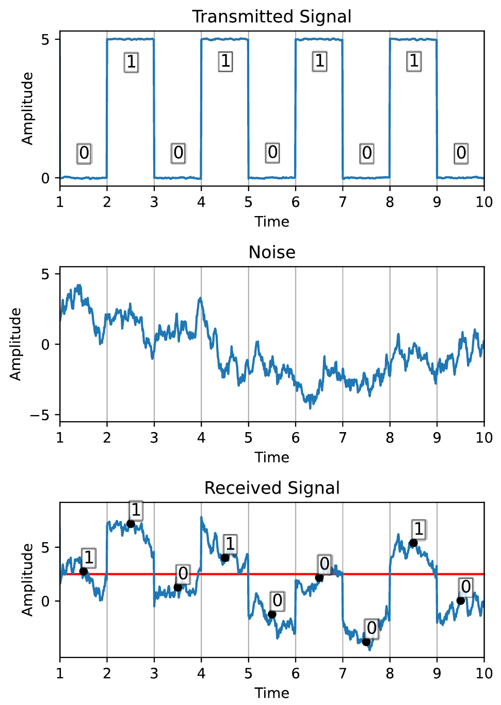
Differential signalling with balanced lines
Send the signal twice, once upside down
Two people shout the same message, one of them saying the opposite. A passing truck drowns both out by the same amount, so if you only listen to the difference between them, the truck disappears.
That is differential signalling: two matched wires, one carrying the data and one its inverse. Noise lands on both equally and cancels when the receiver subtracts them.
- The two devices are connected with two wires of the same type and length (balanced lines).
- We transmit the signal and the inverted signal:
- Non-inverted signal (P): '0' is GND, '1' is VS.
- Inverted signal (N): '0' is VS, '1' is GND.
- Similar to a differential ADC (Week 4), the receiver measures the difference P - N: a positive difference means '1', a negative one '0'.
- Advantages:
- Noise cancellation thanks to the balanced lines: noise that couples equally into both wires disappears in P - N.
- Additional noise resilience because the receiver sees double the signal voltage: P - N swings between -VS and +VS.
- Enables low-voltage operation: lower consumption and higher speeds.
- A ground offset between the two devices is also common to both wires, so it cancels too.
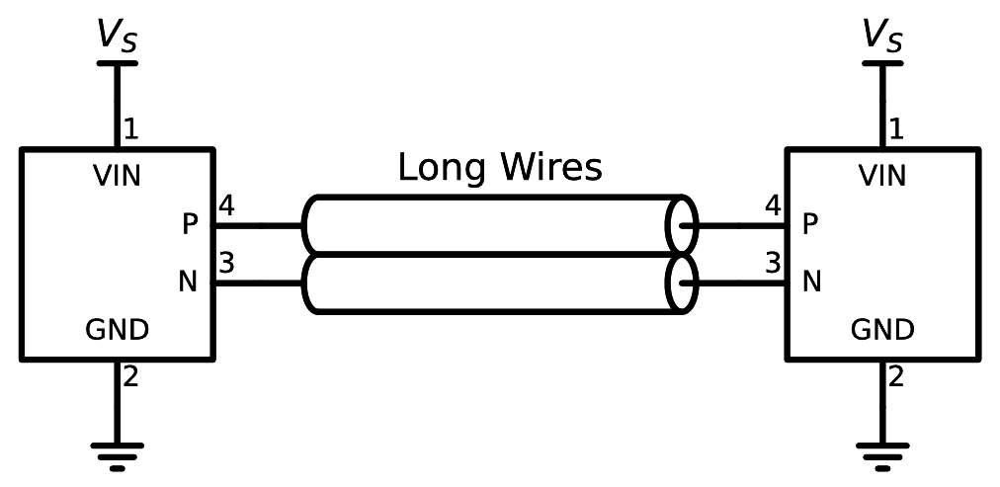
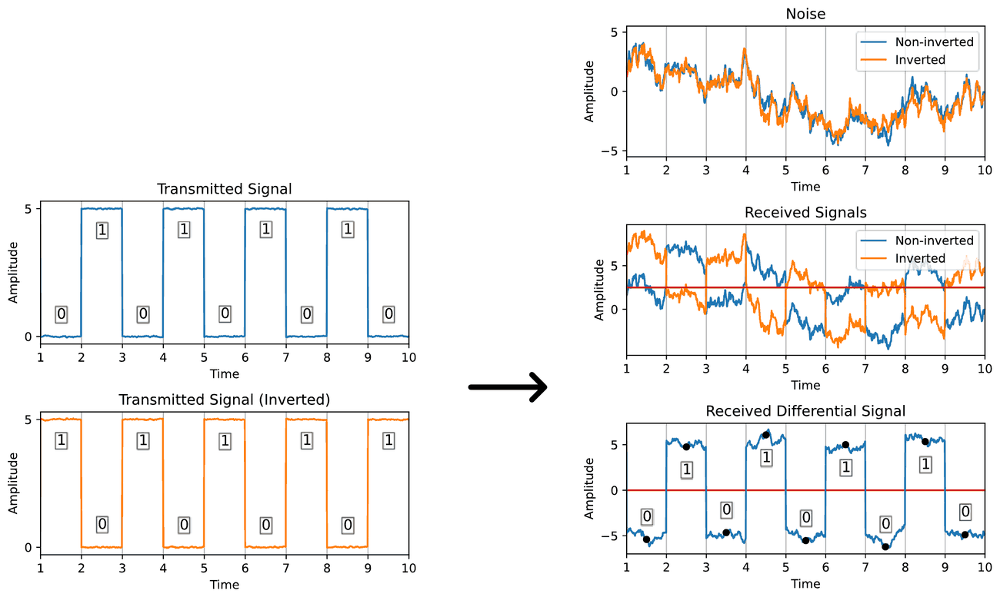
Synchronisation at longer distances
No clock wire, so use the transitions
Two musicians without a conductor agree on a tempo, but their sense of time is never perfect. They stay together by listening to each other's notes and adjusting. If one stops playing for a long time, they drift apart.
Receivers do the same: every change on the line is a chance to re-align. Long stretches without a change are dangerous, so protocols stuff in extra bits just to create a change.
- Devices operate asynchronously, each with its own clock (no clock line, unlike SPI or I2C in Week 5). The clocks drift relative to each other.
- Transmission rates are pre-agreed and defined by the protocol.
- Changes on the line (high-to-low, low-to-high) in predetermined patterns are used for synchronisation.
- Long periods without a change on the line can cause de-synchronisation. Bit stuffing: adding bits to force a transition. The receiver knows the rule and removes them again.
- UART (Week 5) re-synchronises only on the start bit of each byte, which is why it tolerates only a few percent of clock error. Re-aligning on every edge, with stuffing to guarantee edges, removes the limit on frame length.
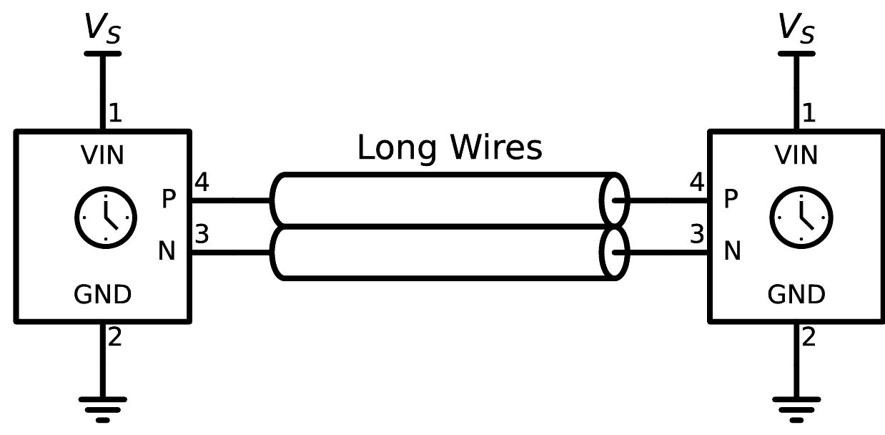
USB 2.0 (Universal Serial Bus)
Differential pair, NRZ-I and bit stuffing in one familiar cable
The USB cable on your desk uses all the tricks so far: a twisted pair of data wires driven in opposite directions, data carried by changes rather than levels, and an extra bit slipped in whenever the line would stay still for too long.
- Uses differential signalling with balanced lines; the lines are twisted to reduce noise.
- Differential '1': D+ high, D- low. Differential '0': D+ low, D- high.
- Encodes data in NRZ-I (NRZ-S) with bit stuffing:
- Logic '1': no change in voltage level.
- Logic '0': change in voltage level.
- To maintain synchronisation, after 6 consecutive '1's a '0' is added to force a transition (red in the figure).
| Name | Colour | Function |
|---|---|---|
| VBUS | Red | 5 V power supply |
| D- | White | Data (-), 3.3 V |
| D+ | Green | Data (+), 3.3 V |
| GND | Black | Ground |
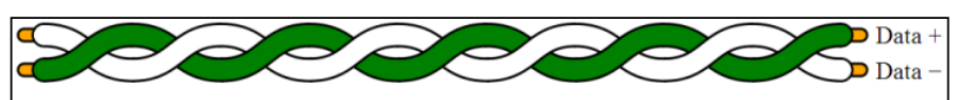
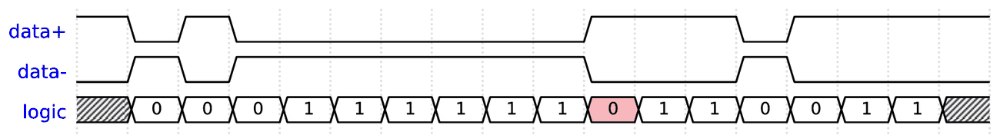
Data link layer and medium access
The Data Link Layer
Frames between physically-connected nodes
The physical layer delivers a stream of bits. The data link layer turns that stream into frames with a beginning, an end, an address and a checksum, and it decides who may talk when several devices share the same wire.
- Responsible for the transmission of data frames between physically-connected nodes (local networks).
- Logical Link (LLC) sublayer:
- Common interface to the protocols above.
- Error control (retransmissions, acknowledgements, etc.).
- Flow control.
- Medium Access Control (MAC) sublayer:
- Frame format and synchronisation.
- Physical addressing.
- Error detection.
- Coordinates access to a shared medium.
Frames
Giving meaning to a sequence of bits
A frame is an envelope for bits. A recognisable start lets the receiver lock on, a header says who it is for and what is inside, the payload is the letter itself, a check code reveals damage in transit, and a recognisable end closes it.
- A frame defines the meaning of sequences of bits. Typical fields:
- Start: designates the beginning of the frame; used by the receiver to synchronise.
- Header: protocol-specific information, such as configuration and addresses.
- Payload: higher-level data.
- Error detection: a code used to detect errors (bit flips).
- End: designates the end of the frame.
- The CAN and Ethernet frames later in this lecture are concrete versions of this template.
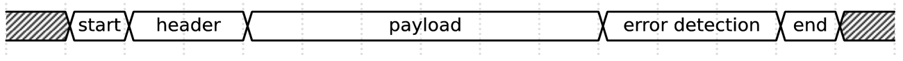
Error detection: parity and CRC
Spotting bit flips before trusting a frame
The sender computes a short fingerprint of the frame and sends it along. The receiver computes the fingerprint again from what it received: if the two differ, something was damaged and the frame is thrown away.
A parity bit is a one-bit fingerprint (catches a single flip); a CRC is a longer, smarter one (catches far more).
- Main idea: add a code to the frame that is generated from the header/payload. The receiver repeats the process; if it generates a different code, the frame is discarded.
- Parity check (as in UART, Week 5): adds one bit so that the total number of '1's is odd or even, as pre-agreed. Detects 1-bit errors (in fact any odd number of flips), but misses two flips.
- Cyclic Redundancy Check (CRC): adds a code of N bits (e.g. CRC-15 adds 15 bits). Detects more sophisticated errors.
- How a CRC is computed: append N zeros to the data and divide by an agreed (N+1)-bit generator using XOR instead of subtraction; the N-bit remainder is the CRC. The receiver divides data + CRC by the same generator and expects remainder 0.
CRC = remainder of (data · 2N) / G, computed with XOR
- Detection, not correction: a damaged frame is dropped, and recovery (retransmission) is left to error control.
Sharing the medium
One bus, many talkers
A shared bus is a meeting room with one microphone. If two people speak at once, nobody understands either of them. Someone has to set rules: who speaks next, and who goes first when it matters.
- This is the job of Medium Access Control (MAC).
- Two devices cannot transmit at the same time on a shared bus: their signals overlap and both frames are destroyed (a collision).
- The two questions every MAC scheme must answer:
- How can we avoid such collisions?
- Who gets priority?
- The answers in this lecture: polling (a coordinator decides), the CSMA family (listen before talk, back off randomly), and CAN's arbitration (priority by ID).
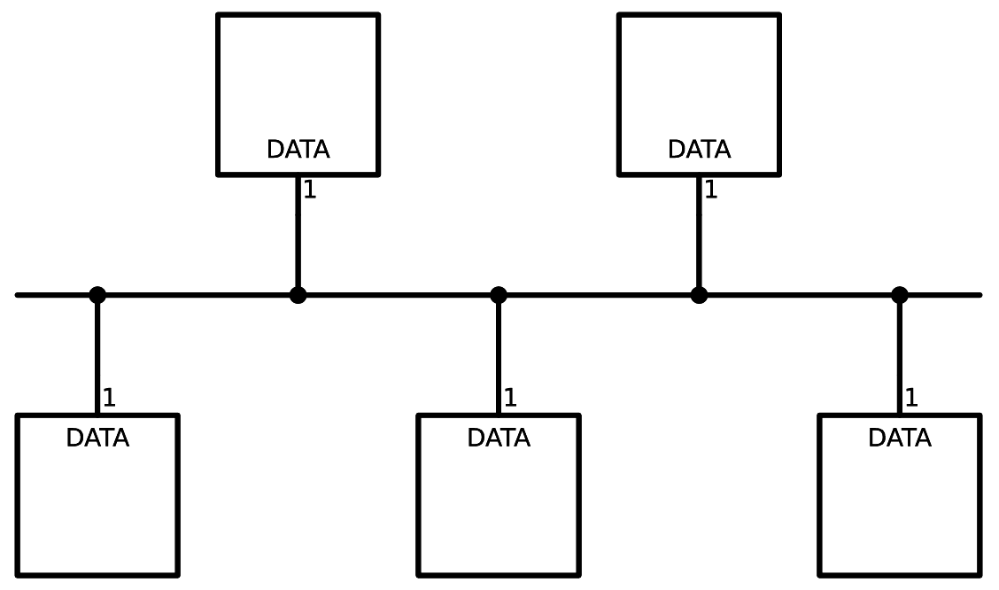
Polling
Speak only when you are asked
A teacher goes round the class: "Anna? Ben? Carla?" Nobody speaks unless asked, so nobody talks over anyone. It is simple and fair, and you know when your turn comes. But the teacher spends time asking people who have nothing to say, and if the teacher leaves, the class goes silent.
- A coordinator polls the other devices; a device does not transmit unless polled. (This is how SPI and I2C controllers work in Week 5.)
- All communication goes through the coordinator: device-to-device communication is not possible directly.
- The coordinator can give more transmission opportunities to devices that need them, e.g. Device 1 → 2 → 3 → 3 → 4 → 1 ...
- Advantages: simple, and bounded latency (every device is polled within one cycle).
- Disadvantages: polling overhead, device-to-device overhead, not easily extendable, single point of failure (the coordinator).
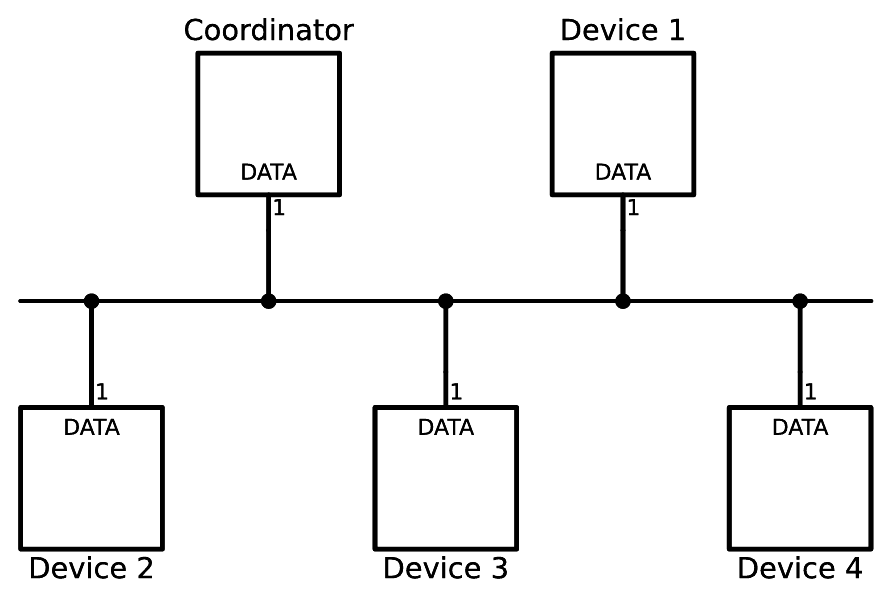
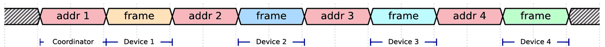
CSMA: Carrier Sense Multiple Access
Listen before talk
No teacher this time: before speaking, you listen. If someone is talking, you wait until they finish, then go. Polite, and fast when the room is quiet. But if two people were both waiting politely, they both start the moment the speaker stops, and talk over each other.
- Listen-before-talk: the transmitter monitors the wire for transmissions (carrier sense, cs).
- If idle, it proceeds with the transmission.
- If busy, it waits and transmits when the medium becomes idle.
- Collisions can still happen if two devices transmit (almost) at the same time: both sensed an idle medium, or the other transmission had not yet reached them.
- Transmitters are not aware that a collision happened: they send the whole frame, and the receiver gets a corrupted frame (red in the figure).
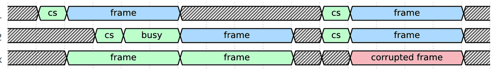
CSMA/CD: Collision Detection
Keep listening while you talk
Now you keep listening while you speak. The moment you hear someone else, you both stop, each waits a random short moment, and you try again. Little time is wasted, and the random wait makes it unlikely you clash again.
- Collision detection: while transmitting, also sense the medium for other transmissions.
- If a collision is detected, wait some time randomly (backoff, bo) and try again later.
- Advantages: collisions are stopped early without wasting a lot of bandwidth (the frame is cut short, "fr.."), and the transmitters know to retransmit.
- A device that detects a collision keeps transmitting briefly (a jam) so the other side hears it too; in the lab this lasts as long as the signal travel time.
- Used by the original Ethernet on a shared coaxial cable.
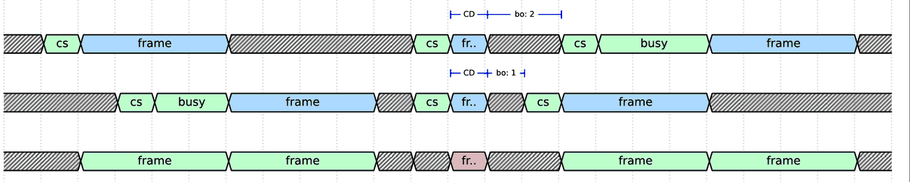
Binary exponential backoff
Wait longer the more you collide
After a clash, everyone rolls a die to decide how long to wait. If the room is crowded, small dice give too many ties, so after every clash you switch to a bigger die. Once you get through, you go back to the small one.
- After a collision, choose a random number bo and back off for bo time units:
bo ∈ [0, 2CW - 1]
- How large should the contention window be?
- Too small: high probability of another collision in high traffic.
- Too big: unnecessarily large idle time in low traffic.
- Exponential backoff (initially CW = 1): after each collision CW = CW + 1, so the window doubles; after a successful transmission it resets to CW = 1.
- The window adapts to the traffic: the more devices contend, the more collisions, the larger the window.
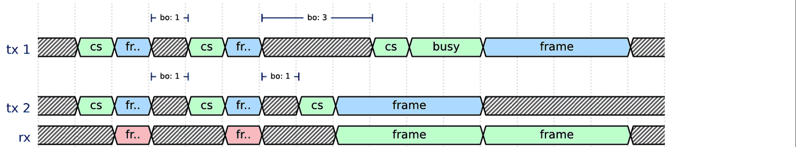
Probabilistic prioritisation
Smaller dice for important devices
Give the important device a small die and the unimportant one a huge die. The important one almost always rolls lower and goes first. Almost: once in a while the unimportant one rolls a zero and gets lucky.
- Device prioritisation via the binary exponential backoff.
- Low priority devices start with a large contention window (e.g. CW = 8).
- High priority devices start with a small contention window (e.g. CW = 1).
- Low priority devices can transmit before high priority devices if lucky: prioritisation is probabilistic, not guaranteed.
- Example: with CW = 1 (bo 0 or 1) against CW = 8 (bo 0 to 255), the low-priority device goes first only if it draws 0 while the other draws 1: (1/256) × (1/2) = 1/512.
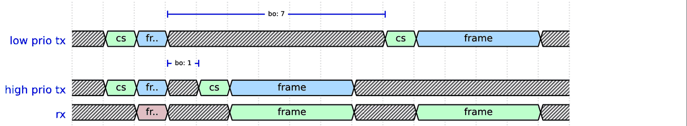
CSMA/CA: Collision Avoidance
When you cannot hear while you talk
Some devices cannot listen while they speak. A clash then costs the whole sentence, so it is worth avoiding clashes in the first place: if the room is busy, don't jump in the moment it goes quiet; wait a random extra moment first.
- Used when it is not physically possible to sense the medium while transmitting. Collisions are then more costly, as they cannot be stopped early.
- If the channel is busy, wait some time randomly before attempting the first transmission, using binary exponential backoff.
- Collisions are less likely to occur in the first place, but the random waiting costs bandwidth.
- This is the approach of wireless networks, where a radio's own transmission drowns out what it could receive (later in the course).
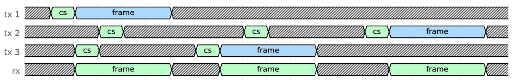
CSMA trade-offs
Great when quiet, poor when crowded
CSMA is like a conversation without a chairperson: quick and flexible when few people talk, chaotic when everyone does. There is no promise about when you will get to speak.
| Pros | Cons |
|---|---|
| Low latency in low traffic (no waiting for your turn) | Unbounded latency for individual frames (can in theory wait forever for an idle medium) |
| Flexible to add/remove devices from the network | Poor efficiency under heavy traffic (collisions very likely) |
| Probabilistic prioritisation possible (smaller CW for high-priority devices) |
- Compare with polling: polling has bounded latency and no collisions, but overhead, a single point of failure, and it is hard to extend.
The CAN bus
The CAN bus and its signal
The network inside a car
A modern car has dozens of small computers (engine, brakes, windows, lights) talking over a shared pair of wires: the CAN bus. It uses a twisted differential pair like USB, with one twist: a '0' is shouted, a '1' is merely "nobody shouting".
- Uses differential signalling with two balanced lines, CANH and CANL.
- '1' is transmitted passively: the recessive state.
- '0' is actively driven: the dominant state.
- Low-speed CAN (up to 125 Kbps): to transmit '1', resistors pull CANH to GND and CANL to 5 V; to transmit '0', CANH is actively driven to 5 V and CANL to GND.
- High-speed CAN (up to 1 Mbps): to transmit '1', pull-up resistors pull CANH and CANL to 2.5 V; to transmit '0', CANH is actively driven to 3.5 V and CANL to 1.5 V.
- A car typically has several CAN buses joined by gateways: high-speed CAN for engine and transmission, low-speed CAN for body electronics such as windows and locks.
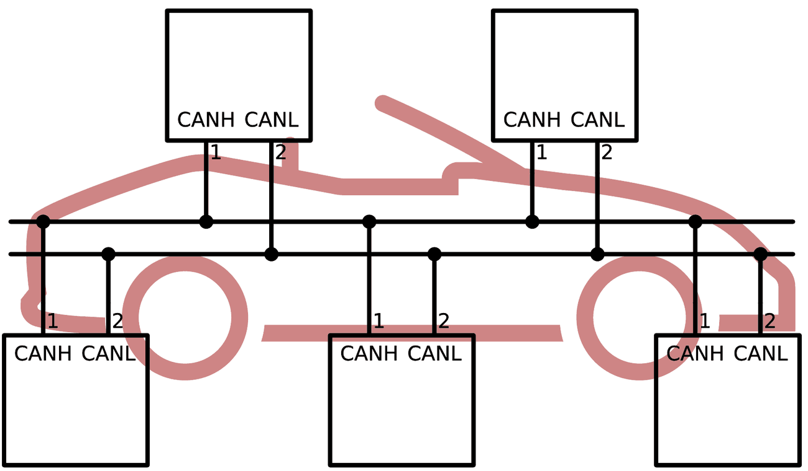
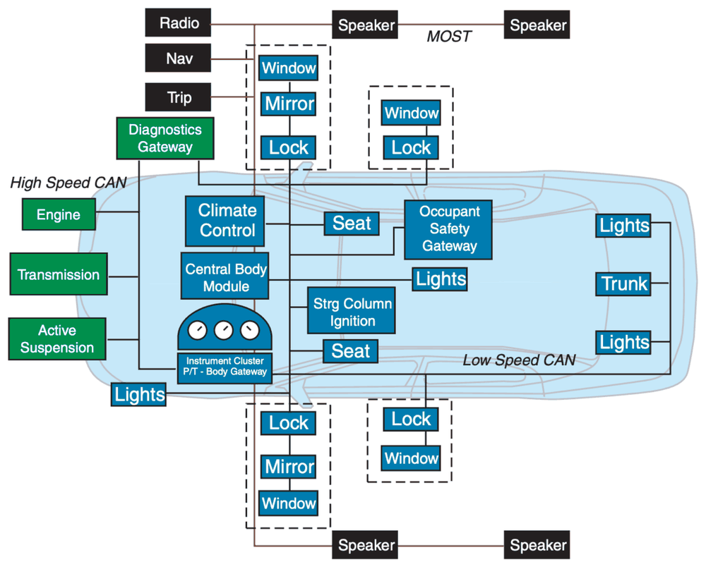
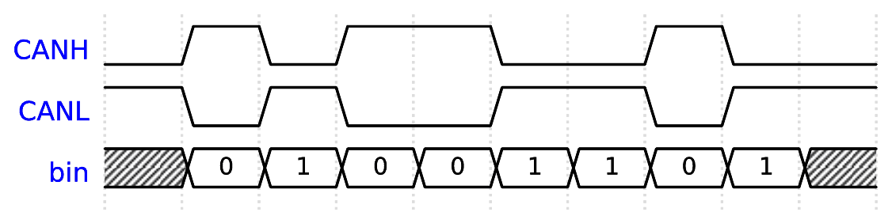
Dominant state wins!
'0' always beats '1'
A '1' is silence and a '0' is a shout. If one node shouts and the others stay silent, everybody hears a shout. So whenever anyone sends '0', the bus is '0'. It is the same "anyone can pull it low" idea as the open-drain I2C bus from Week 5.
- If one device transmits '0' and the others transmit '1' at the same time, the CAN bus state is '0':
- '0' is actively driven (dominant), while '1' is passive via the pull-up resistors (recessive).
- Only if all nodes transmit '1' is the bus '1'.
- '0' always wins.
- Logically the bus is the AND of all transmitted bits (a wired-AND). Nothing is damaged by "disagreeing": no short circuit, because a '1' is never driven.
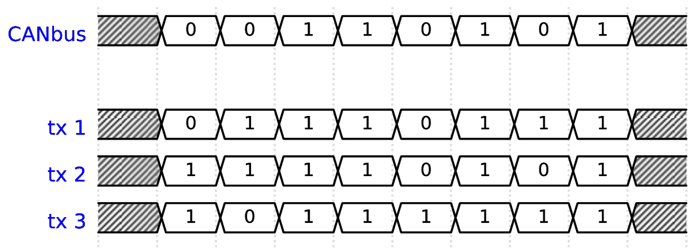
CSMA/CD with arbitration
Collisions that nobody loses data in
Everyone starts talking at once, saying their ID number one digit at a time while listening. As soon as you say "1" but hear "0", you know someone more important is talking, and you go quiet. The most important speaker never even notices there was a contest.
- Each node gets a unique 11-bit ID.
- The frame starts with a SOF (Start Of Frame), a dominant '0', for synchronisation.
- The first field after the SOF is the 11-bit node ID: the higher the priority of the node, the lower the ID.
- Transmitters read the bus; if an inconsistency is observed (they transmit '1' but the bus is '0'), they stop transmitting and try later.
- The collision is non-destructive: the highest-priority message goes through without errors. Compare with Ethernet's CSMA/CD, where both colliding frames are lost.
- In the slide: tx 2 (01111000010) loses at the 4th ID bit, tx 3 (01101011100) at the 9th; tx 1 (01101011011) has the lowest ID and wins.
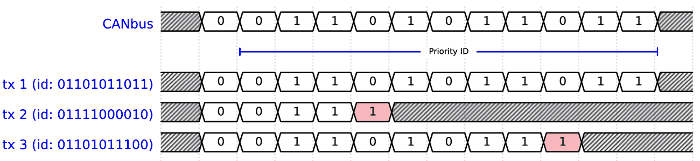
CAN frame types and bit stuffing
Broadcast frames, two ID lengths, four frame types
CAN messages are announcements on a loudspeaker, not letters: everyone hears every frame and decides for themselves whether it matters to them. The ID says what the message is (and how important), not who it is for.
- Communication is sender-initiated and broadcast-based: all nodes on the bus receive all frames, and higher-level protocols determine whether they should be ignored.
- Bit stuffing: to maintain synchronisation, a bit of opposite polarity is added after 5 consecutive bits of the same polarity (USB uses 6 '1's).
- Two ID formats:
- Standard: 11-bit IDs (211 = 2048 unique identifiers).
- Extended: 29-bit IDs (229 ≈ 537 million unique identifiers).
- Four frame types:
- Data frame: a frame with data, sent by an ID.
- Remote frame: a frame requesting data from an ID.
- Error frame: transmitted by any node that detects an error.
- Overload frame: a frame to inject a delay.
Standard, remote and extended frames
Every field, bit by bit
A CAN frame is a short form with fixed boxes: a start mark, the ID (which doubles as the priority), a few control bits, up to 8 bytes of data, a checksum, a box the receivers tick to say "got it", and a long quiet end.
| Field | Bits | Meaning |
|---|---|---|
| SOF | 1 | Start of frame; must be dominant '0' |
| ID | 11 | Unique ID of the sender (receiver, for remote frames); also the message priority |
| RTR | 1 | Remote transmission request: '0' (dominant) for data frames, '1' for remote frames |
| IDE | 1 | Identifier extension: dominant '0' for standard frames |
| R0 | 1 | Reserved for future extensions |
| DLC | 4 | Data length code: number of bytes that follow (0 to 8); in a remote frame, the expected number of bytes |
| DATA | 0 to 64 | The data; length defined by DLC. Absent in remote frames |
| CRC | 16 | 15-bit error detection code, last bit recessive '1' as delimiter |
| ACK | 2 | Transmitter sends recessive '1'; a receiver that got the frame without errors overwrites it with dominant '0'; last bit recessive '1' as delimiter |
| EOF | 7 | End of frame: all recessive '1' |
| IFS | 3 | Inter-frame spacing: all recessive '1' |
- Remote frame: same fields without DATA; RTR is '1'. (The slide calls it "dominant '1'", but a '1' on CAN is the recessive level.) Because a data frame's RTR '0' is dominant, a data frame beats a remote frame with the same ID.
- Extended data frame: SOF, ID A (11 bits, most significant part), SRR (substitute remote request, recessive '1'), IDE (recessive '1' for extended frames), ID B (18 bits, least significant part), RTR, RB (2 reserved bits), then DLC, DATA, CRC, ACK, EOF, IFS as before. 11 + 18 = 29 ID bits.
- A standard data frame is 47 bits plus 8 per data byte before stuffing (44 + 3 IFS). Stuffing applies from SOF to the end of the CRC sequence and can add bits.
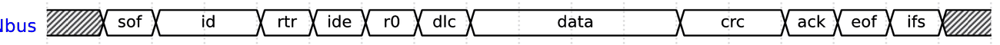
CAN bus: advantages and disadvantages
Excellent for urgent traffic, harsh on the unimportant
CAN always lets the most important message through first and checks everything twice, which is exactly what brakes and airbags need. The downside: if important messages keep coming, unimportant ones may never get a turn.
- Advantages
- Low latency in light traffic.
- Strong prioritisation for vital traffic.
- Robustness: abundant error checking. CRC and ACK, SOF, EOF, delimiters and IFS at message level; transmitted bits are also read back for inconsistencies; the bit stuffing rule of no more than 5 consecutive bits of the same level.
- Disadvantages
- Unfair to low-priority nodes: starvation in high traffic.
- Poor latency for low-priority nodes.
Ethernet
IEEE 802.3: Ethernet
One name, fifty years of standards
"Ethernet" is not one technology but a family that kept the same frame format while the cables and speeds changed completely: from a thick shared coaxial cable at a few megabits to fibre and copper links at hundreds of gigabits.
- A standard for wired local area networks (LANs).
- A family of standards evolving since 1983:
- Originally by Xerox in 1976, at 2.94 Mbps.
- 10BASE5: the first standard (10 Mbps).
- Now up to 400 Gbps (data centres).
- Up to 1500 bytes of data per frame.
- Reading the names: the number is the rate in Mbps, BASE means baseband signalling, and the suffix describes the medium (5 and 2: coaxial cable of roughly 500 and 200 m; T: twisted pair).
Ethernet: MAC addresses
48 bits that name a network interface
Every Ethernet interface is born with a serial number: its MAC address, often printed on a sticker. The first half says who made it, the second half which device it is.
- A unique 48-bit identifier (6 bytes) for each Ethernet interface, typically written in hex, e.g.
AA:BB:CC:DD:EE:FF. - Composed of two 24-bit parts:
- Organizationally Unique Identifier (OUI): identifies the manufacturer (assigned by IEEE).
- Hardware identifier: identifies the specific hardware (assigned by the owner of the OUI).
FF:FF:FF:FF:FF:FFis the broadcast address.- Two bits of the first byte carry extra meaning: the lowest bit (I/G) is 1 for group (multicast) addresses, the next bit (U/L) is 1 for locally administered addresses that are not taken from an IEEE OUI.
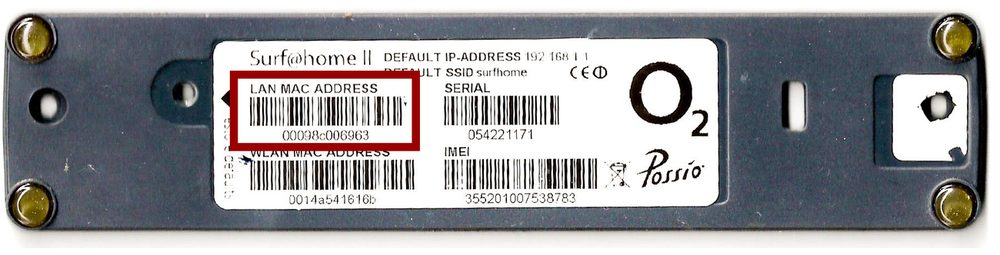
The Ethernet frame
Destination first, so others can stop listening early
An Ethernet frame starts with a drum roll (the preamble) for synchronisation, then puts the destination address first, so every other device can stop reading after six bytes. The data follows, then a CRC to check it.
| Field | Bytes | Meaning |
|---|---|---|
| Preamble | 7 | Seven bytes of 0b10101010 for synchronisation |
| SFD | 1 | Start of frame delimiter, 0b10101011: marks the beginning of the frame |
| Dest MAC | 6 | MAC address of the destination |
| Src MAC | 6 | MAC address of the source |
| Length/Type | 2 | Values up to 1500: payload length. Values from 1536 (0x0600): type of packet inside the payload |
| Payload | 46 to 1500 | Data; padding is added to reach the minimum of 46 bytes |
| FCS | 4 | Frame check sequence: error detection with CRC-32 |
| ESD | 4 | End of stream delimiter: marks the end of the frame |
- The destination address comes first, so receivers can quickly decide whether the frame is for them (process it) or not (ignore it).
- The preamble's alternating 1010... pattern gives the receiver plenty of transitions to lock its clock onto before the real data starts.
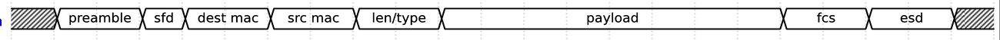
The original Ethernet
One coaxial cable shared by everyone
The first Ethernet was literally one long cable snaking past every computer in the building. Everyone shared it, so only one could talk at a time, using listen-before-talk with collision detection.
- 10BASE2 and 10BASE5 (10 Mbps): original implementations over a single coaxial cable (half-duplex: one direction at a time).
- Manchester encoding (IEEE 802.3 convention): '0' is a high-to-low transition, '1' is a low-to-high transition.
- Bus topology and repeater hubs.
- Medium access with CSMA/CD and binary exponential backoff.
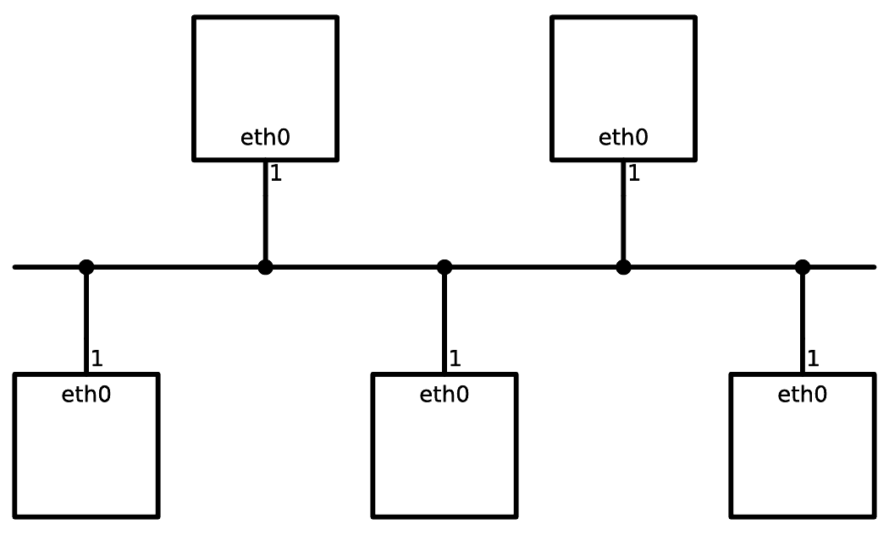
Ethernet switch
A box that learns where everyone is
A hub is a loudspeaker: whatever comes in on one cable goes out on all the others. A switch is a smart post office: it notices which cable each sender's letters come from, and from then on delivers letters for that address only through that cable.
- A switch learns where each device is connected:
- It maintains a table that maps MAC addresses to ports (learned from the source address of each incoming frame).
- Entries in the table have an expiration date.
- If the destination is in the table, the frame is forwarded to the correct port only.
- Otherwise the frame is repeated to all ports (flooding).
- Unlike a repeater hub, which emulates a bus by repeating everything everywhere.
- Because each cable then carries only the traffic meant for it, separate pairs of devices can communicate at the same time.
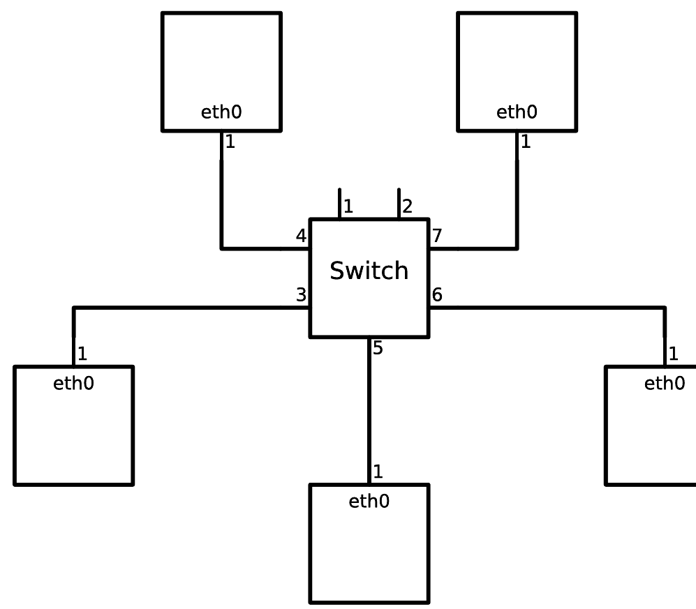
The common Ethernet: 10BASE-T and 100BASE-TX
Twisted pairs, full duplex, no collisions
The Ethernet cable you plug into a laptop has separate twisted pairs for sending and receiving. With a dedicated cable to a switch, nobody else shares your wires, so collisions simply cannot happen and you can send and receive at the same time.
- 10BASE-T (10 Mbps) and 100BASE-TX (100 Mbps):
- Peer-to-peer and switched topologies.
- Full-duplex: differential signalling over 2 twisted pairs (TX+, TX-, RX+, RX-).
- No collisions, and throughput is doubled (both directions at once).
- 10BASE-T keeps Manchester encoding.
- 100BASE-TX uses MLT-3 line coding together with 4B/5B encoding (next two topics).
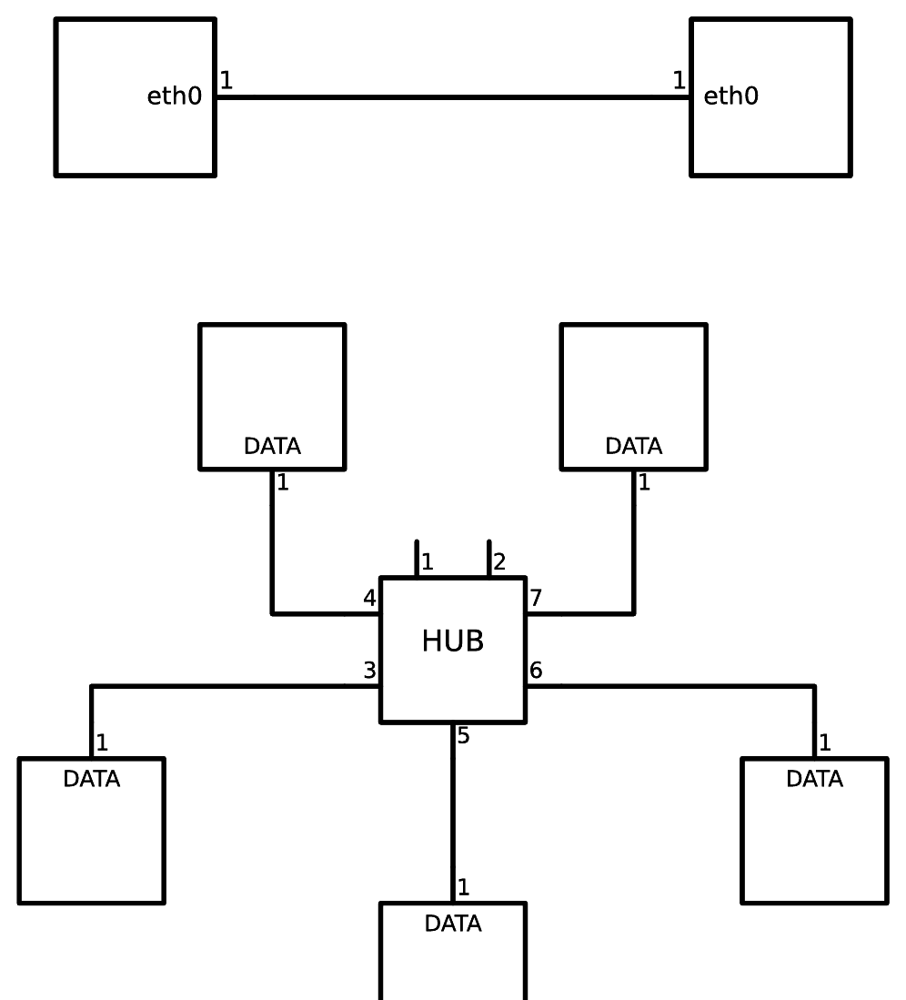
Multi-Level Transition 3 (MLT-3)
Three levels, small steps
Picture a pendulum that can only stop at left, middle or right, always moving in the same order. Every '1' nudges it one step along; a '0' leaves it where it is. The steps are small, so the signal changes gently, which lets it go fast through a cable.
- Three voltage levels: -1, 0, +1, visited in a fixed transition order: -1, 0, +1, 0, -1, ...
- Line coding: a '0' is no transition; a '1' is a transition (one step in the order). It is NRZ-I with three levels.
- Advantage: small transitions allow higher speeds. A run of '1's goes through a full cycle only every 4 bits, so the fundamental frequency is a quarter of the bit rate.
- Disadvantage: many continuous '0's lead to no transitions and, eventually, loss of synchronisation. (4B/5B fixes this.)
| Data | 1 | 1 | 1 | 0 | 1 | 1 | 0 | 1 |
|---|---|---|---|---|---|---|---|---|
| Code | -1 | 0 | +1 | +1 | 0 | -1 | -1 | 0 |
4B/5B encoding
Trade one bit in five for guaranteed transitions
Before sending, every group of 4 data bits is swapped for a 5-bit "code word" from a table, chosen so that each word contains enough '1's. Since MLT-3 moves on every '1', the line never stays still for long, whatever the data.
- Encodes 4 bits of data into 5 bits; the 5 bits are then transmitted using MLT-3.
- 5 bits allow 32 values: 16 values for data (4 bits), plus signal codes such as Idle, start-of-stream (J, K), end-of-stream (T, R) and Transmit Error (H).
- Ensures frequent transitions by avoiding 5-bit values that have fewer than two '1's. Data 0 (0000), for example, becomes 11110.
- Needs a 125 Mbps transmission rate to achieve 100 Mbps of data:
100 Mbps × 5/4 = 125 Mbaud
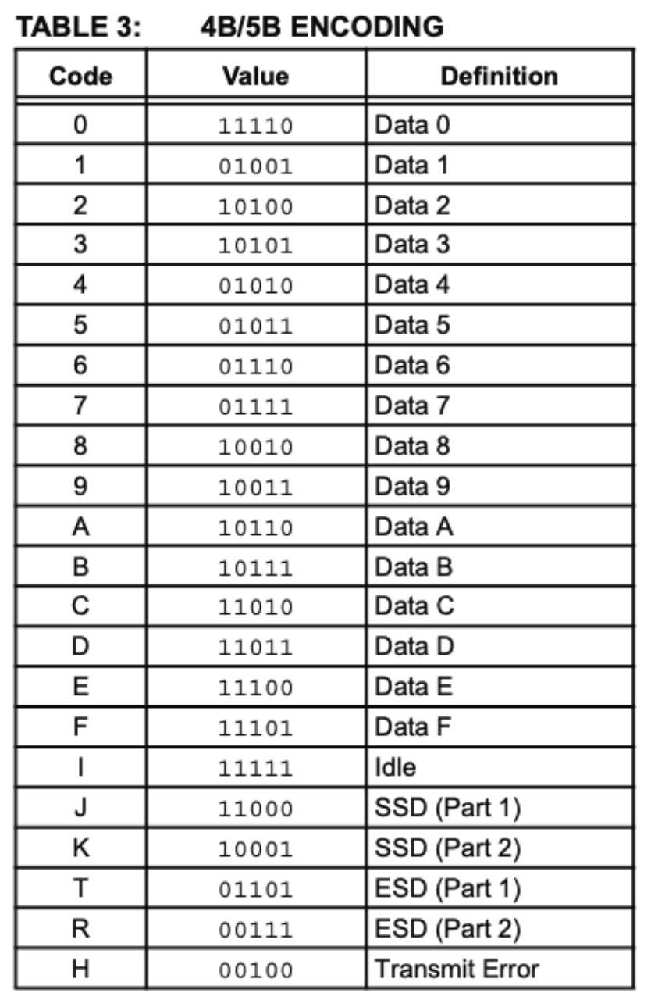
The automotive Ethernet
100 Mbps over a single pair, for 15 m
Cameras and infotainment need far more bandwidth than CAN offers, but every gram of copper in a car costs fuel and money. Automotive Ethernet keeps the familiar Ethernet frames and squeezes 100 Mbps through a single twisted pair, because a car never needs 100 m of cable.
- Requirements:
- Infotainment and new sensors require higher data rates in vehicles than CAN.
- Need to reduce cable weight, cost, energy footprint and EMI.
- No need to support long cables: 15 m is enough.
- 100BASE-T1: uses only 1 bi-directional full-duplex twisted pair (echo cancellation), with 4B3B to 3B2T conversion and PAM-3 encoding (3 bits sent as 2 three-level symbols).
- Transparent to the MAC layer: the same frames, only the physical layer changes.
| Property | Classic (100BASE-TX) | Automotive (100BASE-T1) |
|---|---|---|
| Data rate | 100 Mbps | 100 Mbps |
| Baud rate / clock | 125 MHz | 66.66 MHz |
| No. twisted pairs | 2 | 1 |
| Line code | 4B5B MLT-3 | 4B3B PAM-3 |
| Max distance | 100 m | 15 m |
Gigabit Ethernet
Four pairs, both ways at once
To reach a gigabit without raising the symbol rate, 1000BASE-T uses all four pairs in the cable at once, in both directions, and packs two bits into every symbol on every pair.
- 1000BASE-T (1000 Mbps): differential signalling over 4 bi-directional full-duplex twisted pairs (echo cancellation), each operating at 125 MHz.
- 4D-PAM-5 encoding: five levels; -2, -1, 1, 2 encode 2 bits, and the level 0 is used for error correction.
- 8 bits are transmitted in parallel per symbol period:
4 pairs × 2 bits/symbol × 125 MBd = 1000 Mbps
- Gigabit automotive Ethernet also exists: 1000BASE-T1.
Cheat sheet
The rules and numbers worth memorising
OSI, bottom up
5 Session, 6 Presentation, 7 Application: data.
NRZ and RZ
NRZ-I means NRZ-M or NRZ-S.
Manchester
Thomas is the inverse. Self-clocking, double bandwidth.
Differential pair
Common noise and ground offsets cancel; allows low voltages.
Bit stuffing
Forces transitions so drifting clocks can re-align.
Error detection
Mismatch ⇒ frame discarded. CAN: CRC-15; Ethernet: CRC-32.
Backoff
Smaller starting CW = higher (probabilistic) priority.
MAC schemes
Polling: bounded latency. CSMA: low latency when quiet, unbounded when busy.
CAN levels
'0' dominant, '1' recessive; lowest ID wins arbitration.
CAN IDs and frames
SOF, ID, RTR, IDE, R0, DLC, DATA (0 to 8 bytes), CRC, ACK, EOF, IFS.
Ethernet frame
Destination MAC first. MAC: 48 bits = 24-bit OUI + 24-bit hardware ID.
Line rates
100BASE-T1: 1 pair, PAM-3, 66.66 MBd, 15 m.
Figures cropped from the lecture slides "Wired Networked Embedded Systems" by Xenofon Fafoutis, DTU Compute, with their original sources noted. For personal study.